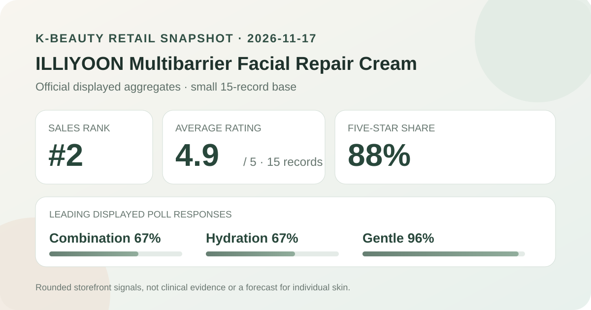
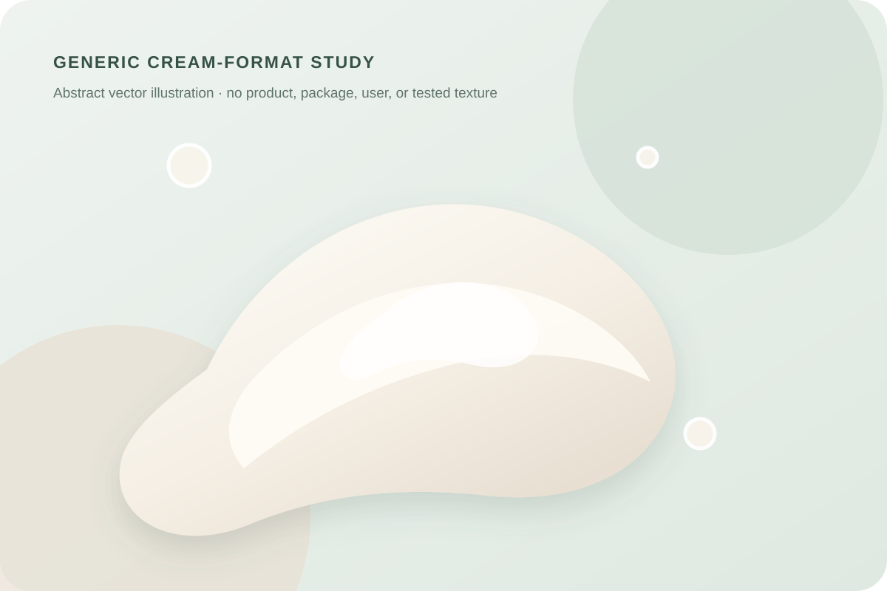

Data captured November 17, 2026. A Korean K-beauty retail platform displayed the title “일리윤 멀티베리어 페이셜 리페어 크림 80ml”; this article uses “ILLIYOON Multibarrier Facial Repair Cream” as a readable English label. It uses only the retailer's title, sales rank, aggregate rating, star shares, and displayed shopper polls. It does not copy or translate individual review text, names, or photos, and it makes no claim of firsthand use.

The short version: ILLIYOON Multibarrier Facial Repair Cream appeared at number 2 in the captured skincare sales ranking. The ranking and detail title matched, while both the product summary and official review area displayed 4.9 out of 5 from 15 records. Five-star ratings accounted for 88% of the shown distribution. Combination skin led the skin-type poll at 67%, hydration led the concern panel at 67%, and gentle led the irritation panel at 96%. The product ranked highly, but the feedback base is exceptionally small and cannot support a confident performance conclusion.
The official display showed an average of 4.9 stars from 15 review records. That is enough to describe the storefront at the captured moment: the early rating direction was favorable. It is not enough to estimate a durable satisfaction rate, compare the cream reliably with mature listings, or predict how a broad population will respond.
With a base this small, every record carries substantial weight. One additional low or high rating can visibly change the average and percentages. A mature listing with thousands of records is not automatically better, but its aggregate is generally less sensitive to one new submission. Here, the rank is a current demand signal while the reviews are an early snapshot.
Retail feedback is also shaped by who purchased, who chose to post, how eligibility and rewards worked, whether launch events concentrated enthusiastic early adopters, and how the platform moderated or linked records. The captured interface did not fully disclose those mechanisms. The 15-record count should therefore stay attached to every interpretation rather than appearing only once in a footnote.
The displayed star shares were 88% five-star, 13% four-star, and 0% for three-, two-, and one-star. Those rows total 101%, which is consistent with separate whole-number rounding. The distribution supports the narrow claim that the visible early ratings were favorable. It does not prove unanimity, and zero-percent rows do not guarantee that lower ratings can never appear.
The platform did not expose raw counts behind each star row. Because the base is only 15, converting the rounded percentages back into counts would create false precision. Ratings may also incorporate impressions of price, packaging, delivery, gifts, expectations, or launch timing alongside impressions of the formula.
The skin-type poll showed 67% combination, 33% dry, and 0% oily. The clean 100% total makes the display easy to read, but the missing poll denominator prevents translating these percentages into audited participant counts. The underlying panel may include fewer respondents than the 15 review records.
These shares describe representation, not comparative suitability. Self-reported skin type can vary with season, climate, cleansing, medication, hormones, and current irritation. The 67% combination share does not prove that combination skin benefits most. The 0% oily row is especially fragile: it may reflect who had responded at that moment rather than evidence that oily skin should avoid the product.
The concern poll displayed 67% hydration, 33% soothing, and 0% wrinkle or brightening. The responsible reading is limited to the panel itself: hydration was the leading shopper-selected label and soothing was second.
The 67% figure is not a corneometer reading, transepidermal-water-loss measurement, duration test, or controlled before-and-after comparison. It does not show how much moisture changed, how long an effect lasted, or whether the cream caused the response. Likewise, the soothing share is not a redness score or evidence that the product treats irritation, acne, dermatitis, or another condition.
The irritation panel showed 96% gentle, 4% ordinary, and 0% felt irritation. Gentle was clearly the dominant displayed response. Yet the percentage should not be read as a 96% probability of tolerance. The denominator was not shown, the base is small, and the interface did not disclose how respondents interpreted the labels.
Zero percent in the irritation row is not a safety guarantee. An aggregate panel cannot screen for allergy, fragrance sensitivity, active dermatitis, a compromised barrier, prescription use, or interactions with exfoliants, retinoids, acne treatments, sunscreen, and makeup. Patch-testing guidance and current label instructions matter more than an early storefront poll for someone with known sensitivities.
The captured review surface did not expose a reliable retailer-generated anonymous topic or sentiment summary suitable for this analysis. I therefore did not infer themes by reading individual comments. No reviewer sentence, username, profile detail, or photo is reproduced or translated here.
This omission matters. A rating and three poll panels can describe the direction of a listing, but they do not establish texture, absorption, finish, scent, pilling, makeup compatibility, or repeat-purchase motivation. Adding those claims from a handful of visible comments would overstate the evidence and violate the aggregate-only scope.

The retailer identifies the item as a facial repair cream. In general skincare language, a cream is a leave-on emulsion usually placed after lighter toners, essences, or serums. That category description does not verify this product's thickness, spread, slip, tack, absorption speed, finish, scent, occlusiveness, or behavior under sunscreen and makeup.
I did not open, smell, spread, layer, or wear the formula. The local illustration uses abstract vector shapes and does not reproduce the product, bottle, formula color, or a real swatch. Sensory behavior depends on the current formula, amount, application method, skin condition, earlier steps, temperature, humidity, and what follows.
“Multibarrier” and “Facial Repair” are parts of the retailer-displayed product name. They do not by themselves establish barrier repair, a defined mechanism, ingredient concentration, penetration, or a quantified change in transepidermal water loss. This article does not convert naming or shopper sentiment into a medical or clinical claim.
The captured aggregates also cannot isolate any ingredient. No complete formula audit, concentration verification, ingredient assay, controlled comparator, or instrument series was available. Readers who need current ingredient, allergen, or regional-label information should consult the package or brand's current disclosure rather than treating this ranking snapshot as a formulation analysis.
Rank 2 describes one moment in a Korean K-beauty retail platform's skincare sales list. It is not a clinical ranking or declaration that this is the second-best cream. Newness, advertising, creator promotion, gifts, inventory, seasonality, and short-term demand can move a listing quickly.
The captured page displayed an 80 ml cream, a ₩24,000 reference price, a ₩18,200 promotional price, and launch-period gift notices. Those details can change independently of the review data. Before buying, confirm the current formula, seller, exact size, gift conditions, stock, expiry information, return terms, and checkout price on the live listing.
ILLIYOON Multibarrier Facial Repair Cream was the first distinct unpublished product after the covered rank-one AESTURA cream configuration. Its captured storefront snapshot is internally coherent: rank 2, a 4.9 average across 15 records, 88% five-star, a 67% combination-skin share, a 67% hydration response, and a 96% gentle response.
The responsible conclusion is deliberately narrow. This is an encouraging early retail snapshot, not mature evidence. Fifteen records, rounded percentages, unknown poll denominators, launch context, no aggregate theme summary, and no controlled measurements make strong claims inappropriate. The page is most useful as a dated baseline that can be revisited after the listing accumulates substantially more feedback.
The captured official display showed 4.9 out of 5 from 15 records. The star rows were 88% five-star, 13% four-star, and 0% for the remaining rows, totaling 101% after rounding.
Combination skin led at 67%, followed by dry at 33% and oily at 0%. That describes a very small displayed sample, not proven suitability.
No. It is a rounded shopper-poll response, not an instrument measurement, controlled comparison, or durability test.
No. The panel cannot predict allergies, sensitivity, routine interactions, or individual tolerance.
No. The analysis uses retailer-displayed aggregates only and does not claim firsthand use.
Source: Olive Young Korea product listing for ILLIYOON Multibarrier Facial Repair Cream, captured November 17, 2026. Rank, price, availability, gifts, counts, percentages, and listing details can change after capture.
Published by The K-Beauty Data Desk. This is an editorial analysis of retailer-displayed aggregates, not medical advice or a substitute for the current product label.
← All reviews · Review-volume rankings · Skin-poll explorer · Methodology